A music player for your own files and your streaming, with a DJ that knows your listening, your stats any day of the year, and a look you can change down to the last detail.
Free and open source, always. The same features and the same look on the phone and the computer.
Custom presets
Every part of the app can be set your way and saved as a preset of your own. These two are one: a look with its own effects (stars, a moon, shooting stars), a visualizer going round a record-shaped cover and another along the bottom, each in colours picked in one place.
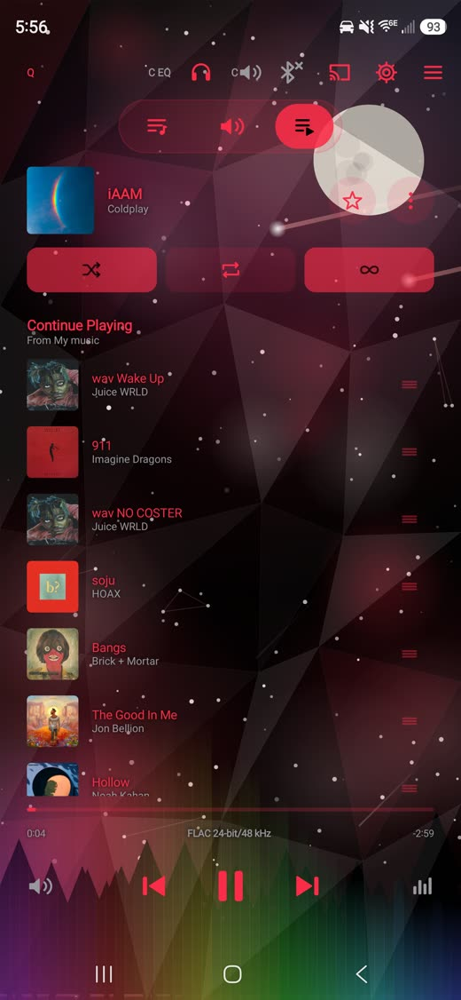
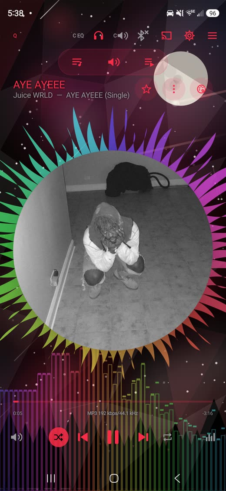
Make it look like yours
Pick a ready-made preset and the whole app changes at once: colours, shapes, layout, effects and visualizers. Or change each one yourself. Every picture below is the same Now playing screen with a different preset on.
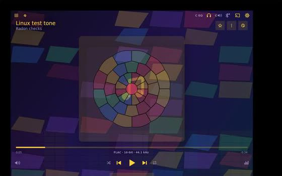
Cathedral
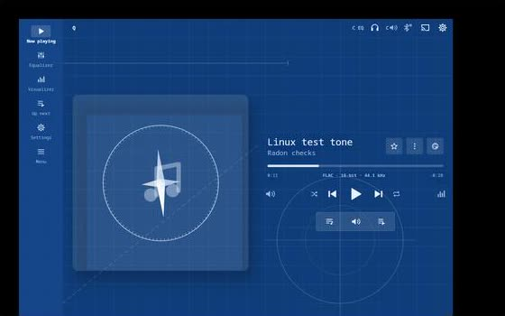
Drawing office
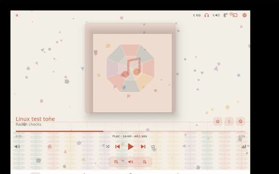
Tile floor
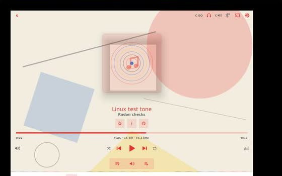
Design school
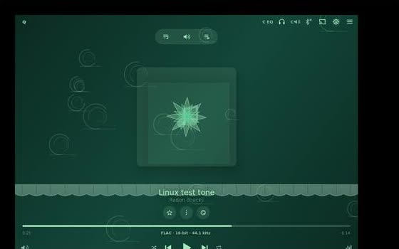
Jade garden
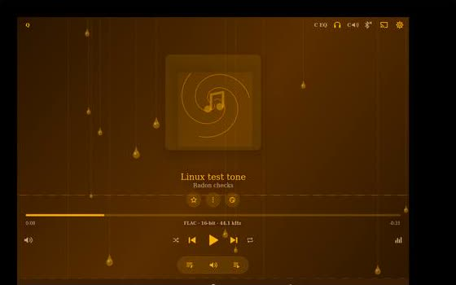
Honey jar
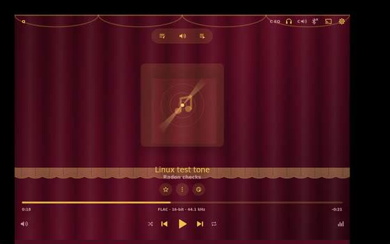
Opening night
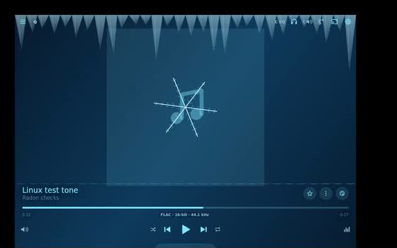
Ice cave
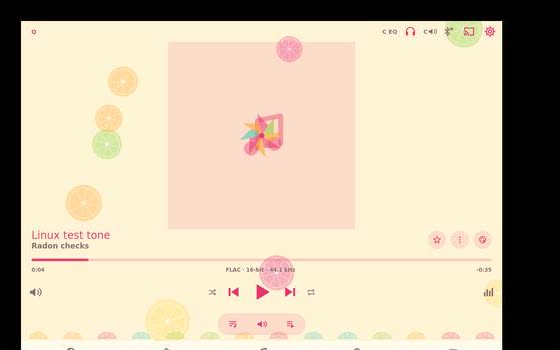
Fruit stand
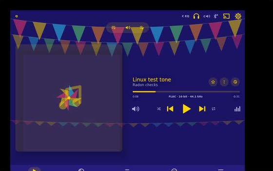
Fairground
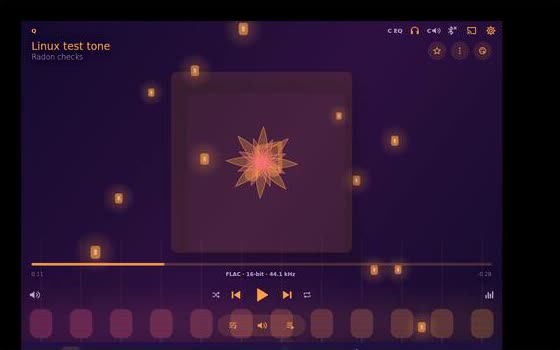
Lantern night
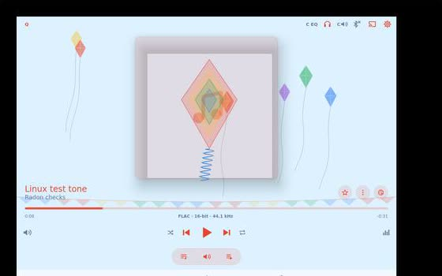
Windy day
It moves with the music. This is Now playing with the Blocks visualizer along the bottom, one of the visualizers you can put behind the cover, in the middle, or both. Any of them can be switched off, and a preset can be told to leave your visualizers alone.
60presets
90+looks (colours)
45themes (shapes)
45layouts
91effects
90visualizers
Follows the cover. A preset that changes with every song: the cover's colours, and effects and visualizers to match.
Mix and match. Any look goes with any theme, layout, effect and visualizer.
See it before you pick it. Every choice shows live screens to swipe through.
Edit the ready-made ones. Take an effect or a visualizer off a preset and keep the rest.
Hide what you don't use. Shorten any menu; nothing is ever deleted.
Share it. Copy a code for anything you made or picked, and someone else pastes it in.
Change by itself, if you like. A different favourite preset every few minutes, or one for each part of the day. Both are off until you turn them on.
Keep your visualizers. Two switches make presets leave your own visualizers alone, so a preset brings only its looks.
Or build your own
Nothing ready-made has to be the last word. Each of these has its own maker in the app, and what you make sits in the same menus as the ready-made ones.
Your own look. Pick the colours, a fade, a glow, stars and effects.
Your own layout. Choose the bar's buttons, the mini player's style and how Now playing is arranged.
Your own visualizer. Its shape, mirror, spin, glow and colours, or two at once: one round the cover and one along the bottom.
Your own colour blends for any visualizer.
Your own Wrapped style and your own lyrics card.
Your own presets. Set everything the way you like it, then save the whole setup under a name.
Yours on both devices. What you make goes into backups and across to your other device.
Yours to give away. Any of them can be copied as a code for someone else to paste in.
Everything else it does
The short version. Each of these is in the app today, on Android, Windows and Linux unless it says otherwise. Almost all of it is a choice: where something can be switched off or changed, it says so.
Playing music
Now playing by touch: swipe the cover for the next or previous song, swipe up for the queue, tap it for lyrics, double-tap to pause.
Quality badge: says exactly what you're hearing, such as "FLAC 24-bit/96 kHz" or a stream's quality.
Your own copy first. Wherever a song turns up, if you have the file, that is what plays, with its cover and tags.
Shuffle three ways (pick one in Settings): Random is pure chance; Smart favours songs you love but haven't heard in a while; Unheard and neglected plays only what you've never played or haven't in a long time, the never played first. Whichever you pick, a song you've heard waits until the rest of the list has had its turn, even across queues and restarts, and a song you skip doesn't count as heard.
Repeat a song or the whole list. Autoplay keeps similar songs coming when the queue ends; off, the music stops there.
Per song, if you want it: its own volume, EQ and speed, remembered.
It remembers the queue, your place in the song and every setting when you come back.
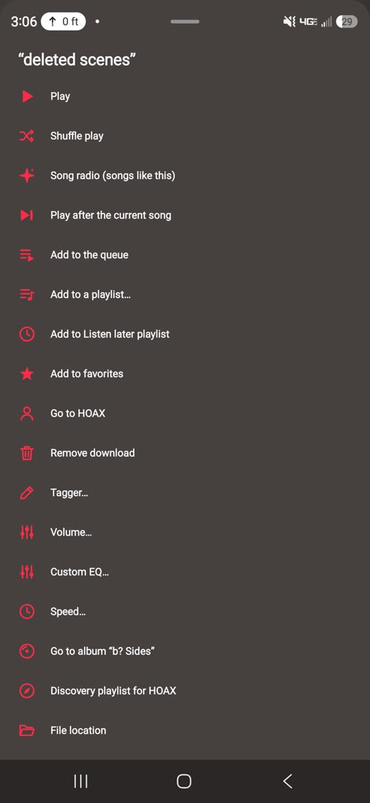
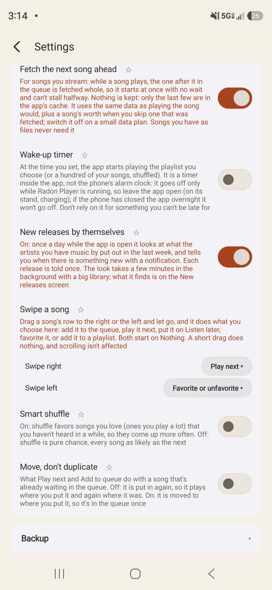
The queue
Yours first. What you add comes first, then the rest of what you started. Drag to reorder.
More than one queue. Switch Queues on and every album, playlist and folder keeps its own queue, right where you left it. Tap Q on Now playing to see them all and jump between them at any time. Off, there is one queue, as usual.
Undo. Take back a clear, a shuffle, a move, a removal or an addition, up to ten steps, without interrupting the song.
Add a song twice, or not. Play next and Add to queue put it in again if it's already waiting; one switch makes them move it instead.
From the phone too. As the computer's remote, the phone reorders, clears and undoes the computer's queue.
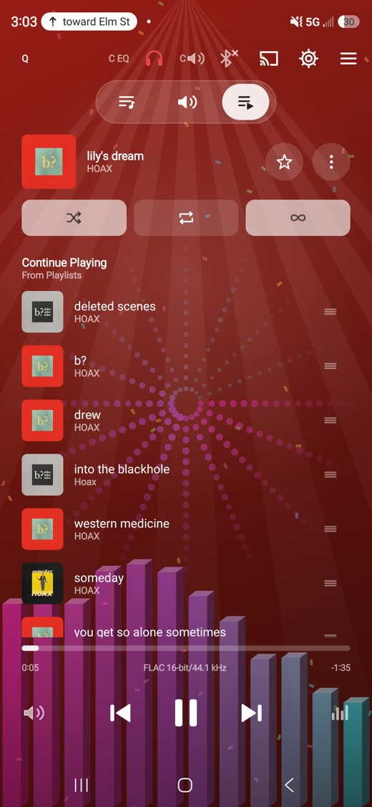
Your library
My music, Albums, EPs, Singles, Artists, Genres, Folders, each as a list, a grid or a compact grid, with its own search and sort, remembered.
Artist pages: their albums and singles, your songs, every song of theirs, and songs they feature on. Show everything, only your music or only streaming. Sort, pin or hide releases, change the picture, and merge an artist written two ways.
Playlists: make, sort, fold into folders, give a cover, import and export. Smart playlists fill themselves by rules (genre, mood, plays, format, skips, length), with ready-made ones.
Plays everywhere: every song, album, artist, playlist, genre and mood shows how often you've played it.
What you have of an album: each album says how many of its songs are on this device and how many you'd only stream, and lists the rest to play or put on Listen later.
More lists: Favorites, Recently played, Skips, Duplicates, Unreleased, Listen later, and whatever you pin.
File type: a tab for each kind of file you have (FLAC, 24-bit and 32-bit FLAC, MP3, M4A, WAV, Ogg), for when one kind needs fixing.
Pick several songs, albums, playlists or folders, then play, queue, tag or delete them together.
Search ignores symbols ("acdc" finds AC/DC) and takes voice.
A menu that fits you. Take screens you never use out of it.
Covers looked after: found for songs without one, or taken from the folder's picture.
Moved files are followed, and nothing is deleted without asking.
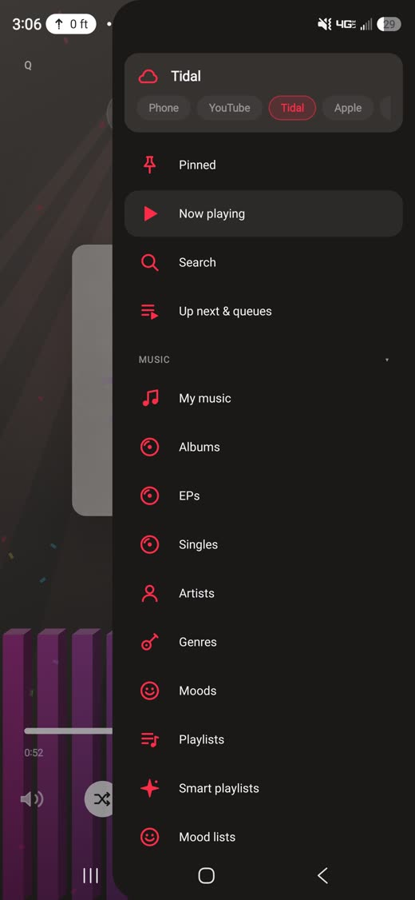
Streaming
Connect your own Tidal subscription for lossless streaming. Its favorites, playlists and radios work as a library here.
You pick the quality: FLAC 24-bit, FLAC 16-bit or 320 kbps, and clean or explicit versions where Tidal has both.
Tidal first. A song only falls back to YouTube's audio when Tidal doesn't have it, and Tidal is tried again next time.
Bring your library over from Spotify, Apple Music, Deezer or YouTube Music; their songs then play from Tidal or YouTube.
SoundCloud with your own sign-in: search, likes, playlists, artists and radio.
Search any of them, or paste a link from another app. Genius finds artists and releases no service lists.
No waiting between songs. The next streamed song is fetched while this one plays. One switch turns that off if you're watching your data.
The DJ
Short sets from your own listening, each of one kind, with a line to introduce it.
Over twenty kinds: on repeat, this time of day, most played, throwbacks, loved and forgotten, ten mood sets, a genre, deep cuts, an artist spotlight, an album moment, on this day years ago, a decade trip, one-hit wonders, second chances, streaks, and four built from the songs you repeat.
From everything, or from what you pick: a playlist, a folder or an album. New songs like yours can be included or left out.
It takes turns. Every kind gets its turn before one comes back, no song returns until 300 others have played, and no artist plays twice in a row.
A voice like a radio host's, over the start of the song with the music turned down, never paused. The same natural voice on phone and computer, the phone's own voice if you prefer, or no voice at all.
It tells you things: a song's 100th play, when you first heard it, your top artists, the hours you listen, how many times you've had a song on repeat.
Instant. The first set is ready before you tap DJ. Switch it up jumps to another kind, from your headphones too.
Ask for something: an artist, a genre, a decade, a mood, "workout".
Stats, Wrapped and Repeats
Wrapped any time: pick a week, a month, a year or all time. Top 15 songs, artists, albums, singles, EPs, genres and moods, minutes, streaks, discoveries, your listener type and a summary card.
Every slide saves or shares as a picture, in the style you pick or one you made.
Most played songs, albums, artists and moods, by plays or by time, for any period, with charts of when you listen. Plus On repeat, Milestones, Skips and On this day.
Repeats: every time a song starts over on Repeat one is counted, with its longest run, for all time, a year, 30 days or 7. Wrapped shows your biggest obsession, your repeat day and more.
Milestones: every time a song or an artist reached 100, 250, 500, 1,000, 2,500… plays, with the day it happened. Songs, artists or both, newest first or biggest first; tap one to play it or open the artist.
Unplayed and neglected: the songs you've never played, or not in 3 months to 2 years, to play or shuffle.
Skips that mean it: only pressing Next with more than 15 seconds left. Going back or picking another song isn't a skip.
Tidy stats: merge an artist or a song counted under two names, say whose plays a duet's are, and keep look-alike artists apart. Never show takes one that's right as it is off the list for good.
Hide from stats: long-press a song, album or artist to take it out of the lists. Its plays still count, and it comes back with one tap.
Collages of your top covers, from 5×5 to 25×25, and share cards of your top 15.
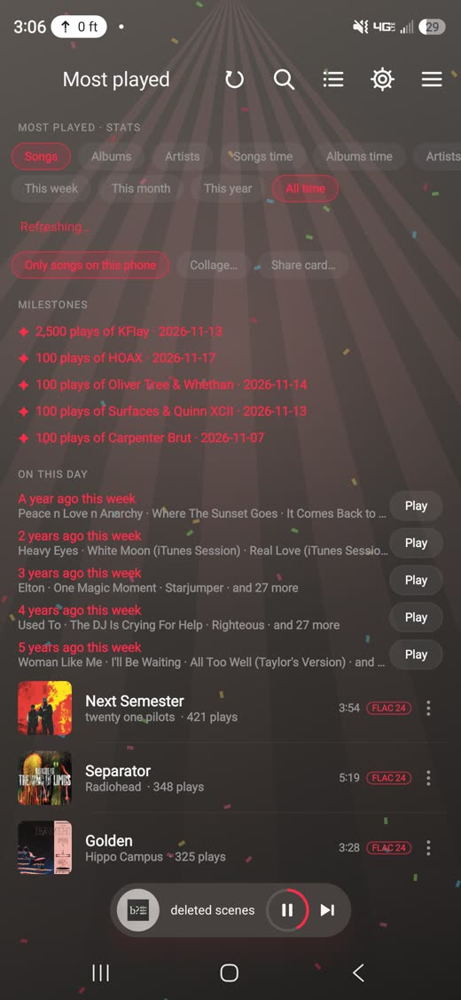
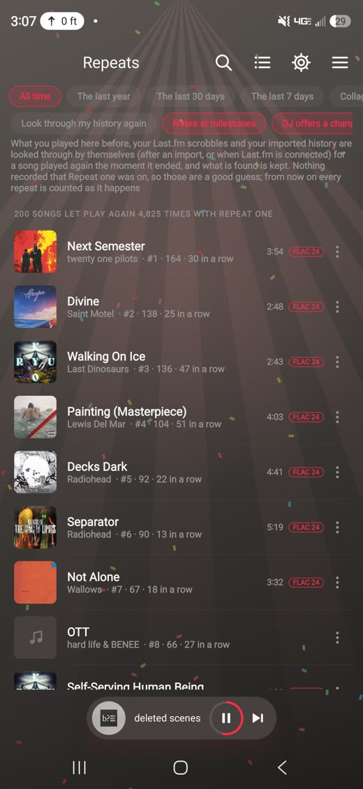
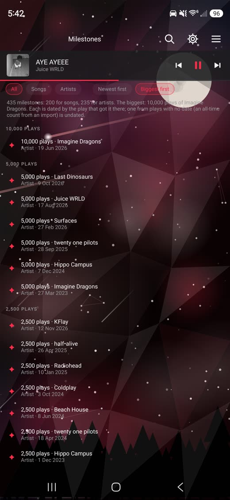
Bring your history with you
Your plays from other apps: Spotify, Apple Music, Deezer, YouTube Music and Tidal, from the data file each service gives you. The app shows where to get it.
Last.fm: connect it and every scrobble you ever made counts, and what you play here is scrobbled too.
What the plays feed: Most played, Artists, Wrapped, the DJ and shuffle, going back as far as your history does.
Your libraries and playlists too: sign in to Spotify, Apple Music, Deezer or YouTube Music and import all of them as playlists here.
Repeats come along: the app works out which songs you played again and again from that history. From Apple Music it can only do this from the Play Activity file, because Apple's other files have no exact times.
Never counted twice. A song is one song across every source. If you used Last.fm with an app, connect Last.fm and skip that app's file; the app warns you, and Reset plays undoes a mistaken import.
Import again any time: only plays you didn't have yet are added.
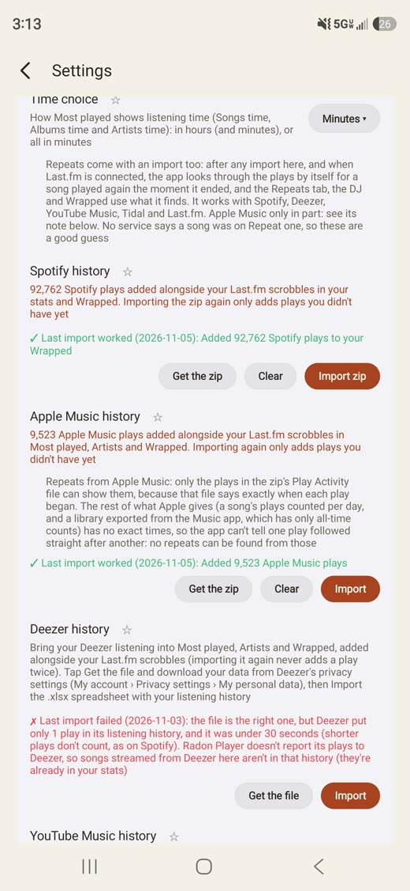
Lyrics, cards and clips
Synced lyrics light up line by line; tap a line to jump there. Or switch to the words as written, with annotations.
Lyrics cards: tick up to 25 lines, pick one of 60 styles or your own, and share or save the picture.
Lyrics with sound: the card as a short video with the song playing, timed to the lines you ticked, or to wherever you set it yourself. Untick it for a plain picture.
Clips with sound: a short video of the song's cover and a seek bar that fills, with the song playing. You set where it starts and ends, from 3 seconds to a minute. Works for streamed songs too.
Picture cards: share a song as a card with a line of your own.
Your play count shows on cards and clips, unless you switch that off.
Lyrics scanner finds lyrics for every song and writes them into the files. What it can't find you can type in, or mark instrumental.
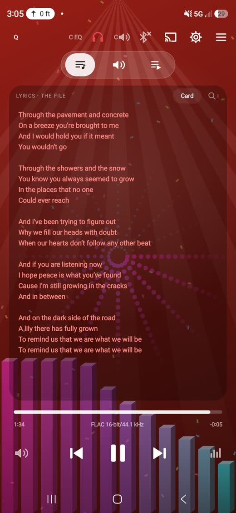
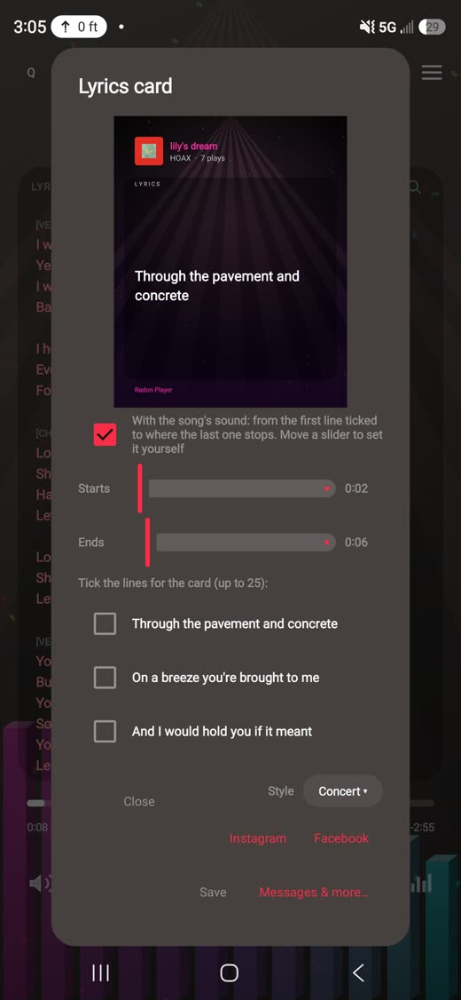
Moods
Every song gets its moods, up to four from twelve: Happy, Energetic, Party, Hype, Chill, Calm, Dreamy, Focus, Romantic, Sad, Dark and Intense.
It listens and reads: the song's energy, tempo and key, and what its words mean.
Only when you ask. A scan runs when you tap it, shows the time left and can be stopped. A song whose file already has moods is left as it is, and one switch freezes every mood.
Optional AI reading of the lyrics with your own key. Without one it works on its own.
Fix one and songs that sound like it learn from your fix.
Used everywhere: the Moods tab, smart playlists, the DJ, Most played and Wrapped.
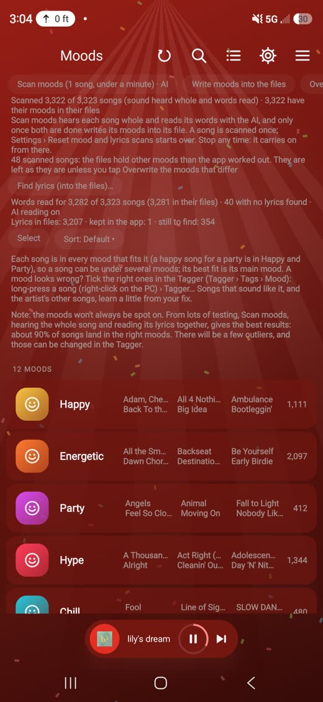
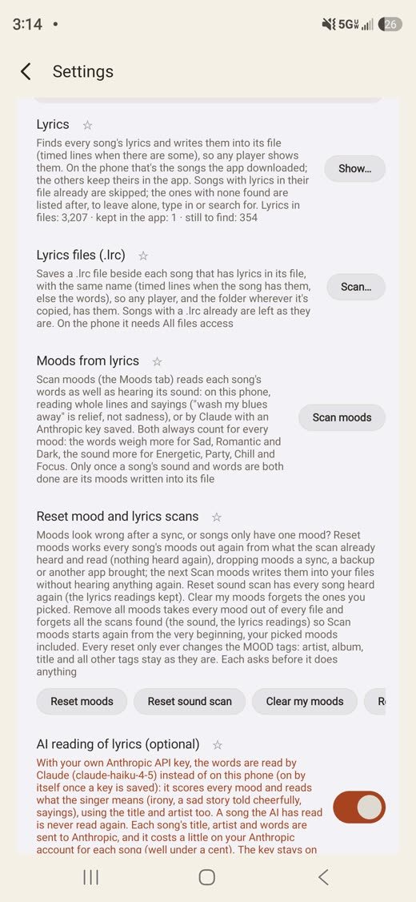
Sound
An equalizer for each output: speaker, wired headphones, each Bluetooth device, a USB DAC, the car. It switches by itself. 3 to 31 bands, ready-made presets or your own.
Auto EQ headphone correction by name.
Boost, Crossfeed and Crossfade. Crossfade is off until you turn it on, as long as you set it, and never inside an album that flows.
Bit-perfect to a USB DAC or the computer's sound card, as a switch. On, each song arrives untouched at its own sample rate and bit depth; off, the EQ and the rest are back. Bass and Treble can stay on with it.
Sound polish you control: clip guard, smoothing of harsh masters, dither and resampling, each with its own switch, and loudness compensation if you want it. On the phone, Android's own FLAC decoder too, for phones whose maker's one drops sound now and then.
A FiiO KA17's own EQ switched from the app, on phone and Windows.
Bluetooth rules, all optional: ignore a device, let the newest one win, or let the car always win.
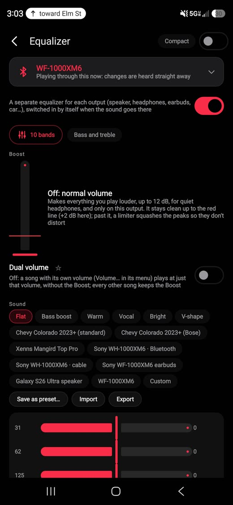
Visualizers
90 styles: ones along the bottom (bars, blocks, waves, city lights, flames) and ones round the cover (rings, starfield, galaxy, tunnel, mandala).
On Now playing: slim bars, any style, two at once (one round the cover and one along the bottom), full screen behind everything, or none.
Over eighty colours and blends, or the look's own colour, or the cover's.
How strongly it shows is yours to set.
It only hears the app's own sound. Nothing is recorded.
Phone and computer together
Sync when you tap it: plays, skips, favorites, EQs, tag changes, synced playlists, and every choice you made in the scans and stats come together, nothing counted twice, with Undo.
Playlists that sync: a switch for each playlist, smart playlists and Listen later included. Two with the same name become one. Each is marked synced, changes waiting, or this device only.
By themselves, if you like: one switch has synced playlists and favorites sync whenever both apps are open.
Send a playlist or a few songs to the other device once, without syncing it.
Phone remote: play, queue, skip and set the volume on the computer from the phone.
Tags match and Moods match: pick a main device for each, and the other device's songs follow it.
Continue where you left off on the other device.
Back up and restore everything in one file.
Tags and tidying
Tagger: a song's tags, cover, lyrics and mood, and which tab a release goes in. Find tags online shows every change before it's made. Change the artist or album and the file moves to match.
Scanner tools: fix albums and artists, live and soundtrack notes in names, genre names, duplicates, songs without covers, empty folders, and identify a song by its sound. Each shows what it would change first, and Never show leaves out what's right as it is.
Folders to leave alone: name folders no scan may touch.
Damaged files found: a full check reads every song through and finds each damaged spot, with Listen to hear it for yourself.
Safe changes: a tag or cover change is made on a copy and checked first, and never to the song that's playing.
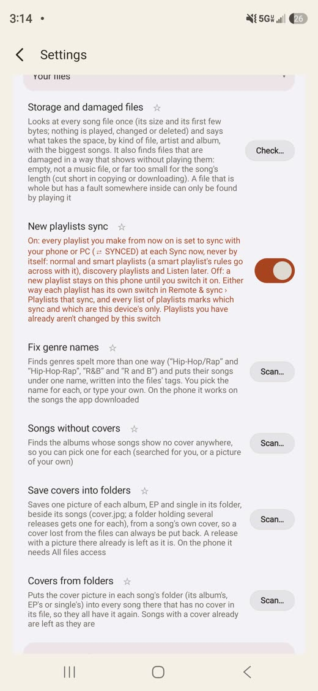
Finding and keeping up
New releases from the artists you already have: last week, month or year. It can check by itself once a day and tell you, if you switch that on.
Discovery playlists of artists that are new to you.
Listen later: put a song, album or EP aside to hear another time.
Concert dates on an artist's page, with a free Ticketmaster key of your own. Add your city to see only shows near you.
Song radio from any song.
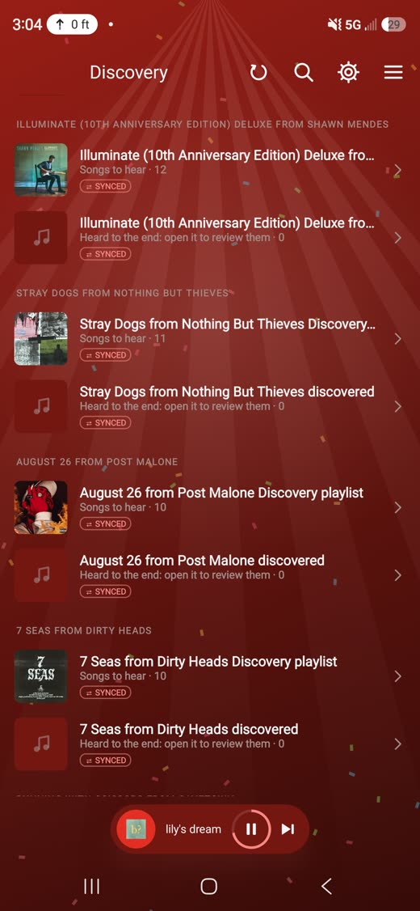
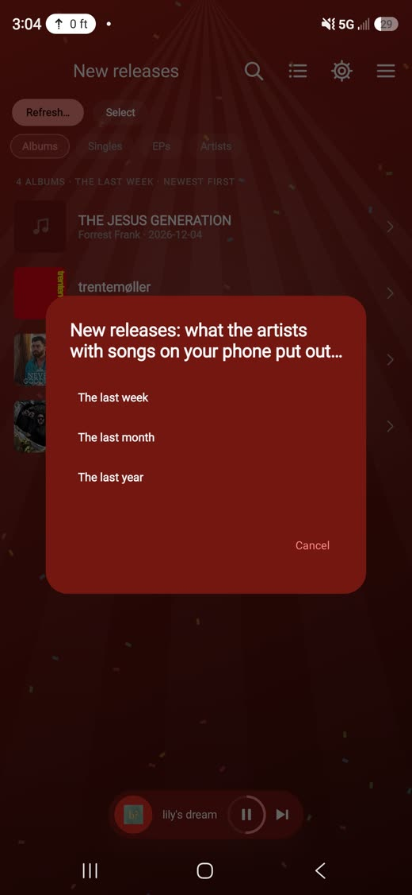
Small things that add up
Favorite settings: star the settings you use all the time and they sit together at the top.
Size of everything: make the whole app bigger or smaller, 80% to 250%, on each device.
Wake-up timer: start a playlist at the time you set, while the app is open.
Automatic backups, daily or weekly if you switch them on, keeping the newest five.
Updates built in: the app says when there is a new version and installs it.
What's new: after an update, a card says what it brought.
Details for support: one button copies everything someone helping you would ask for. No sign-ins or song names are in it.
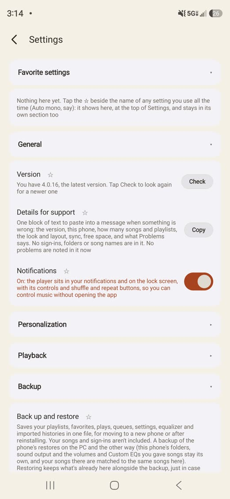
On the phone
Android Auto with covers, Favorite and Shuffle, and the car's own EQ.
Lock screen player, notification and home screen widget in the song's colours.
Picture-in-picture mini player.
Swipe a song to queue or favorite it; you choose what each side does.
Auto mono for the earbuds you choose, and only those. Mono by hand any time.
Casting to a Chromecast, a speaker or a TV.
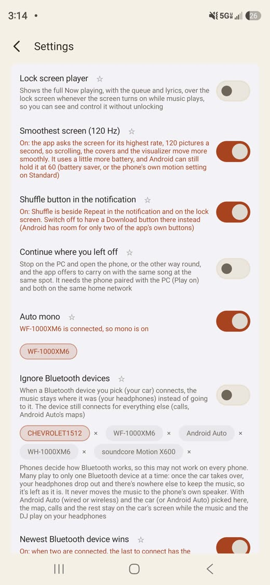
On the computer
Mini player that stays on top: Now playing made small, with your look, effects, visualizer and queue.
Media keys on the keyboard or a headset, and the system's own controls.
System tray, and starting with Windows or Linux if you want it to.
Discord shows what you're playing, if you switch it on.
Keyboard shortcuts and right-click menus everywhere.
Extra screenshots
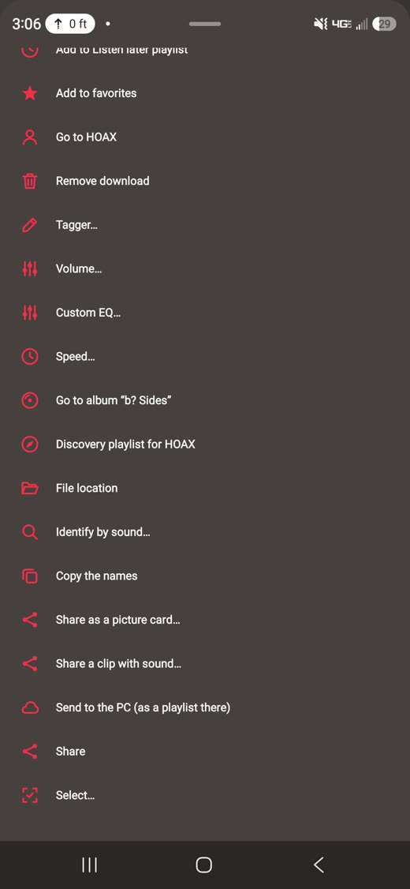
More of a song's options
Get Radon Player
Downloads for Android (.apk), Windows (.msi) and Linux (.deb) are on GitHub, along with the full feature list and the changelog.
Each update installs over the version you have and keeps your settings and stats.
Free, and it stays free
Radon Player is free and open source, and it always will be. There is no company behind it and no plan to make money from it.
I was going to build this for myself and keep improving it anyway. So why not share it? I want people to be able to listen conveniently, wherever they are, with the things other players are missing. I'll keep making it the best it can be, and nobody will ever be charged for it.